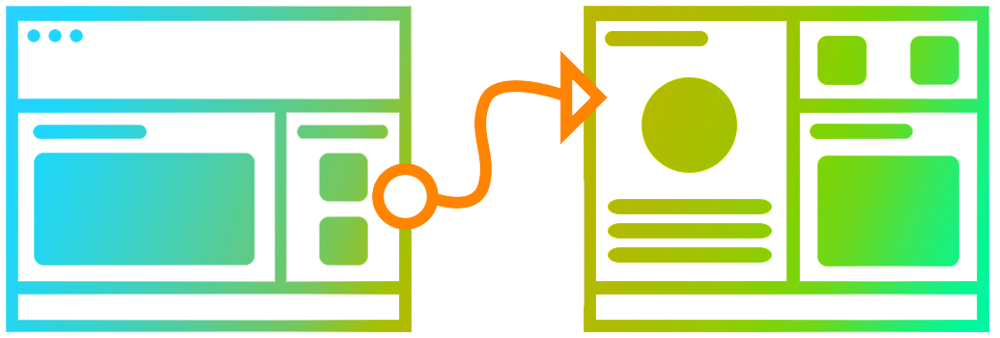

BookMe - Mobile App Design
UXUI Development
BookMe mobile design for planning and finding local events.
Finding and creating events in your local area should not be a painful process, but somehow it always is! Some of these factors include event relocations, time rescheduling, venue cancellations; and not to mention, being bombarded by follow-up text messages. BookMe is an app that eliminates all of these nuances. It is an app that conveniently allows you to virtually schedule and find events online. You can change time, date, and venue information in real time by sending notifications to all of your guests. The app allows you to chat straight from the event page making communication with your friends and family easy.
What we are building
BookMe will make event-planning easy and convenient. With just one tap of a button, you can open doors to a number of events in your local area as well as other locations. Once you book an event, you can effortlessly extend invitations to your friends and family. Sending updates and communicating with your loved ones has never been easier! Everything is located in one app with real-time notifications so no one will miss any updates.
How we are building it
This BookMe prototype is a gateway to an app that can help everyone in their day to day. Since everyone’s on their phone nowadays, BookMe is available and best used as a mobile app. It is something that can be easily installed on your device and you can carry it anywhere you go. Whether you are roaming the streets of a familiar town, or out on an adventurous road trip, BookME is right in your pocket to guide you.
Why we are building it
I'm sure there have been many times where someone has asked you, "What should we do today?" or "Where should we meet?" Put yourself in the shoes of a full-time employee. You’ve been working for 12 hours and at the end of the day, all you want to do is meet up with a couple of friends to unwind. You realize, however, that you do not have enough time to plan such activities. BookMe allows you to save time to plan these leisure meetups after that busy work day.
Personas
Czarinah, 29

OccupationEvent Coordinator
LocationNew York, NY
StatusIn a relationship
Interest & Hobbies : Czarinah loves the outdoors. On her days off, she likes to go hiking and exploring the city. During the holidays and on long weekends, Czarinah aways travels to new places. One of the things she likes to do when travelling is finding the best food eateries in town.
Frustrations : Travelling is a time for relaxing. You should be able to avoid the headaches of planning that comes beforehand. Czarinah often spends too much time looking for a restaurant or finding the best places to visit in a crowded city.
Goal : Czarinah needs something that will help her find events and popular places when she travels. Due to her limited vacation opportunities, she would like to reduce the amount of time she spends on her phone looking for the best hubspots. Instead of stressing out over event-planning, she would rather dedicate her time having fun and making memories in new locations.
Tin, 22
OccupationStudent
LocationSan Diego, CA
StatusSingle
Interest & Hobbies :Tin is in his second year of college and he is enjoying the life of a college student. When diving into Spring, Summer, or Winter break after every exam, Tin likes to celebrate with his friends by going to restaurants and bars.
Frustrations :Prepping for exams is always stressful. As a busy full-time student, who has the time to plan anything with anyone? Tin would like to find the best local events on-the-go. He wants to eliminate the difficult process of having to invite all his friends through text messages, only to struggle with endless back-and-forth conversations.
Goal :Tin needs a convenient way to communicate with his friends when it comes to getting together. Planning events shouldn’t be as tedious as planning a class syllabus -- It should be easy!
Jen, 40

OccupationBlogger
LocationLos Angeles, CA
StatusMarried, 2 Kids
Interest & Hobbies :Jen previously used to live in San Diego but now resides in Los Angeles for her job. Although her work is flexible, it still consumes a lot of her time. She needs to constantly produce content as a blogger. During her time off, she enjoys spending her days in LA looking for events to write about. She also likes to drive down to her hometown to catch up with friends and family; as well as to seek and explore popular events.
Frustrations :Los Angeles and San Diego are very busy cities. There are always events happening and they often occur at the same time. Jen wants to find the best events around town; however, it is difficult for her to prioritize the ones she wants to attend due to schedule conflict.
Goal :Jen needs a tool that will help her find events and locations that are popular in her area so that she can write about them in her blog.
FEATURES
- Easy-to-Use
- Convenient
- Real Time Updates
- Fun Interactive Design
- Simplicity
- Data Driven
PROTOTYPE
UI Process
UI Sketches
Figma
The platform I chose for this project is Figma. It contains an easy-to-use tool for creating prototypes and wireframes. Figma does not require any downloads and is available to everyone; thus making sharing projects very simple and convenient. A few features that Figma has to offer include: flexible design styles, interaction capabilities, and mobile optimization. It's dynamic features have provided me with the necessary tools to create this project and has enabled me to explore the many different levels of prototyping.
- Figma
-
- Numerous Design Features
- Scalable Design
- Convenient Design System
- Plugin Enabled
- Easy Collaboration
FINAL DESIGN